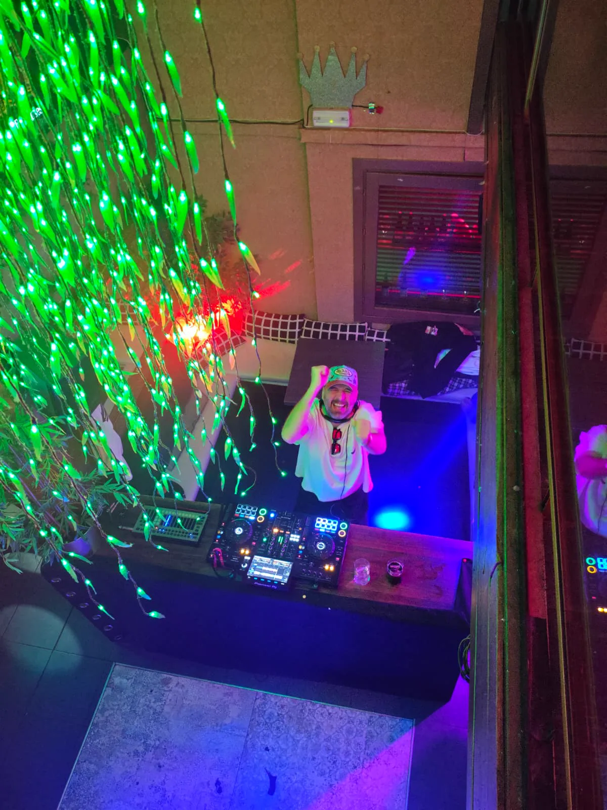

Quienes somos
Pipo & Preco
Somos una propuesta DJ pensada para fiestas que necesitan energia, cercania y musica reconocible. Una cabina flexible para festivales, salas, plazas y eventos privados.
La propuesta
Una sesion abierta para conectar con mucha gente distinta.
Pipo & Preco mezclan hits populares, electronica bailable, pop, rock, indie y sonidos latinos con una idea clara: que la pista no se enfrie. La web final puede usar este apartado para contar su historia real, sus inicios, su forma de entender el show y los tipos de eventos donde mejor funcionan.
Formato: Duo DJ
BPM: 100-140
Origen: Espana
Rider: Pioneer
Galeria
Fotos para vender energia, cartel y presencia.


